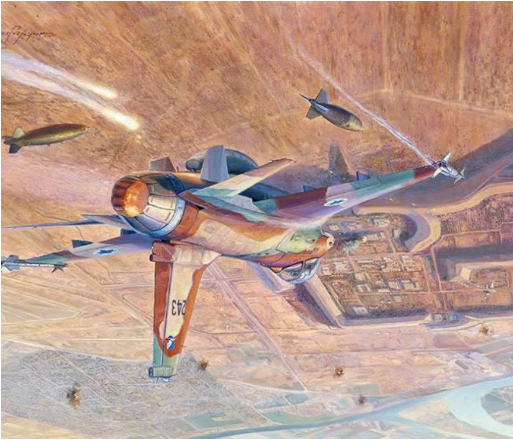
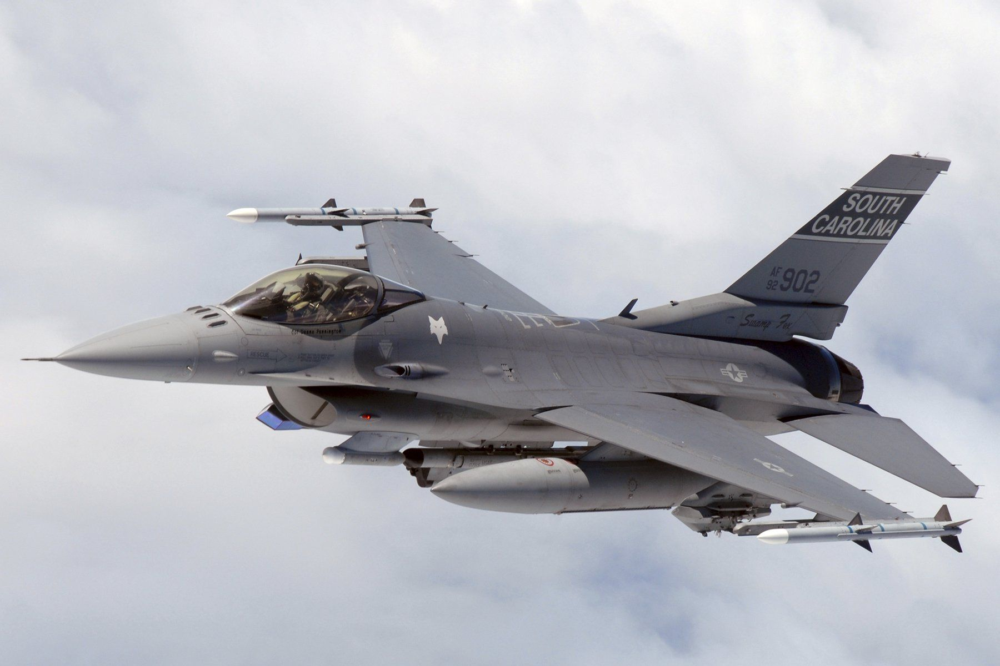

F-16 Fighting Falcon (tłum.walczący jastrząb) powstał jako niezależny porjekt firmy General Dynmics, która otrzymała zamówienie od US Air Force na jednosilnikowy lekki samolot, który maiałby stanowić partnera dla F-15 Eagle. W konkursie stanęły 2 maszyny jedna z firmy Geeneral Dynamics oraz YF-17 Cobra z firmy Northrop. Zdecydowanym zwycięzcom został projekt pierwszej z firm i na przełomie lat 70 rozpoczęła się produkacja F-16.
F-16 po raz pierwszy zostałe wykorzystane w latach 80 przez Izrael wraz z samolotami F-15 do zbombardowana, Irackich instalacji nuklearnych, gdzie rzekomo reżim Saddama Husajna miał prowadzić pracę nad bronią nuklearną.
Kolejnym wykorzystaniem bojowym F-16 przez Izrael były walki nad Libanem, gdzie piloci dorobili się pierwszych zestrzeleń.
US Air Force po raz pierwszy użyła bojowo F-16 podczas I wojny w Zatoce Perskiej. Piloci maszyn F-16 z powodzeniem wykonywali zadania bojowe i przyczynili się do zwycięstwa koalicji w wojnie z Irakiem.
Później F-16 z powodzeniem działał w wielu konfliktach na świecie oraz stał się obiektem eksportu USA do wielu państw sojuszniczych.
W 2008 roku do Polski przybył pierwszy F-16. Maszyny firmy Generl Dynamics są od tej pory najnowszymi samolotami bojowym w arsenal III RP. Samolot z powodzeniem wykonują wielorakie zadania zlecane przez generalne dowództwo wojska polskiego. W 2020 roku, pilot F-16 przechwycił samolot Federacji Rosyjskiej, produkcji Iljuszyna, którzy naruszył przestrzeń powietrzną III RP nad Bałtykiem.